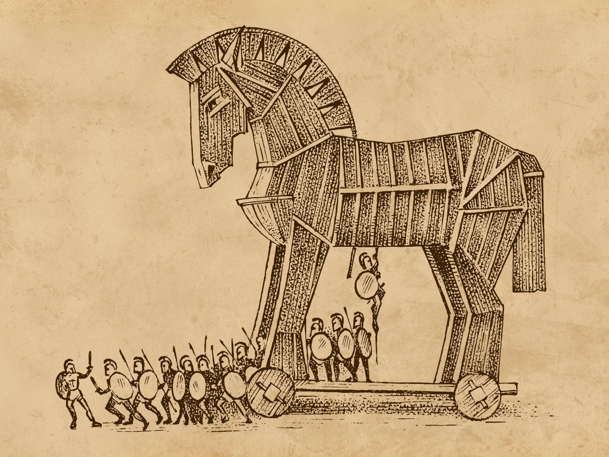
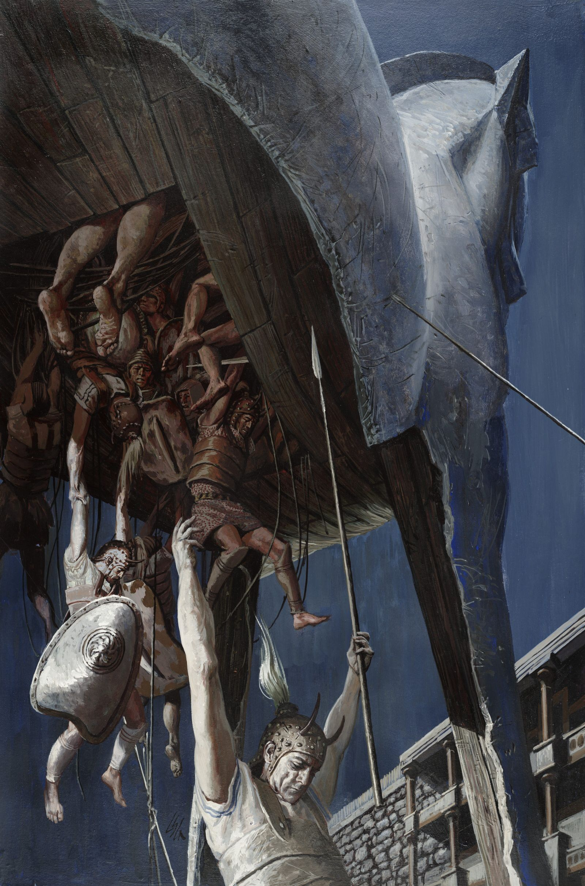

A Guerra de Troia é um dos conflitos mais famosos da mitologia grega — uma guerra que começou não por poder, mas por desejo, orgulho e escolha.
Tudo começou com um julgamento entre três deusas: Hera, Atena e Afrodite. O príncipe troiano Páris foi escolhido para decidir qual delas era a mais bela.
Cada deusa tentou suborná-lo, mas Afrodite prometeu algo irresistível: o amor da mulher mais bonita do mundo.
Essa mulher era Helena, esposa do rei de Esparta. Páris a levou para Troia, desencadeando a ira dos gregos.
Liderados por reis e heróis como Aquiles e Ulisses, os gregos partiram para recuperar Helena, iniciando uma guerra que duraria dez anos.
Após anos de combate sem vitória, os gregos tiveram uma ideia decisiva: construíram um enorme cavalo de madeira e o deixaram como “presente”. Os troianos, acreditando ser um símbolo de rendição, levaram o cavalo para dentro da cidade.

Durante a noite, soldados escondidos dentro do cavalo saíram e abriram os portões de Troia, permitindo a invasão.

A cidade foi destruída.
- Mitos GregosA Guerra de Troia pode ter sido baseada em fatos reais. Saiba mais aqui
Site Sobre Mitologia Grega Criado para Trabalho de Interfaces Web